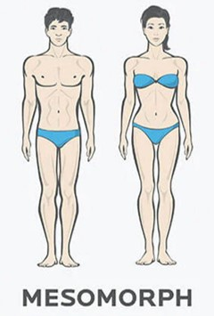

üí™ Biotipos Corporais
A primeira regra para personalizar o treino é determinar o biotipo corporal do usuário. Existem três biotipos principais:
| Imagem | Biotipo | Descrição |
|---|---|---|
 |
Ectomorfo | Corpo mais magro, difícil ganhar peso e massa muscular. |
|  | Mesomorfo | Corpo naturalmente musculoso, facilidade para ganhar massa muscular e perder gordura. |
 |
Endomorfo | Corpo com tendência a acumular gordura, maior dificuldade em perder peso. |
Nota: Escolha o biotipo que mais se aproxima do seu corpo atual para que o treino seja mais eficiente.